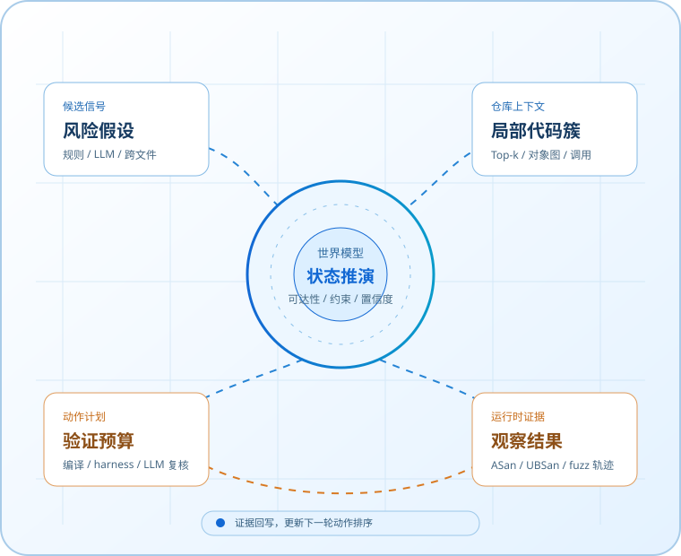
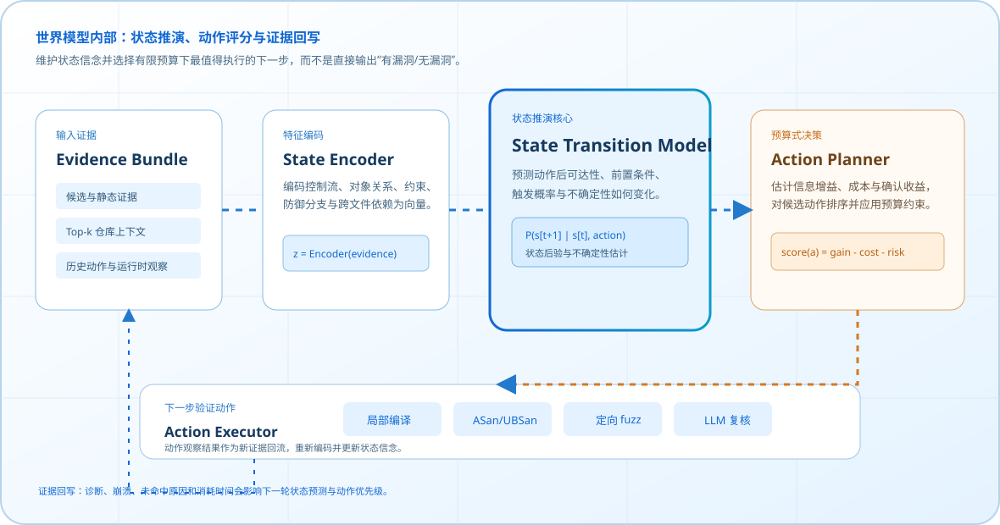
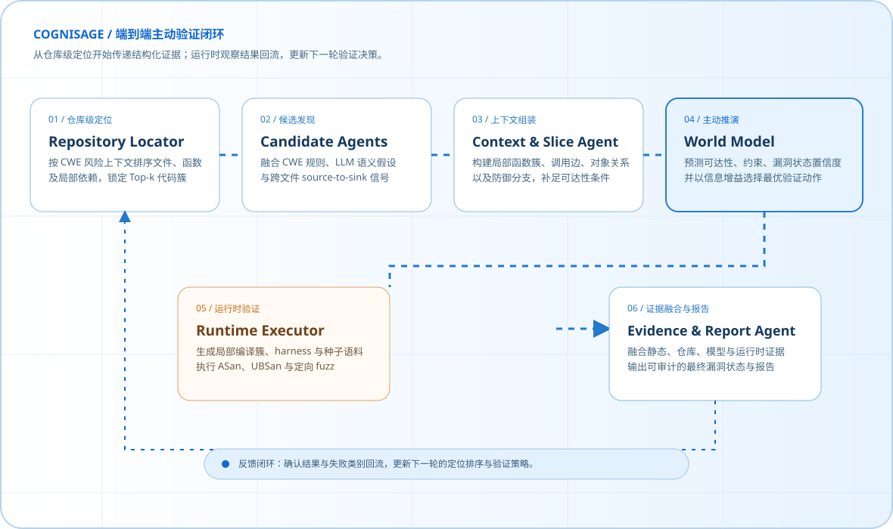

STATIC ANALYSIS
规则命中，不等于漏洞可触发。
传统静态分析擅长覆盖模式，却难以同时确认对象状态、跨文件依赖、边界条件和防御分支。结果是告警池膨胀，审计资源被不可达候选消耗。
+12.52 pp在 cwe_ultra10 同口径下，精确率由 0.6970 提升至 0.8222
PROACTIVE VULNERABILITY REASONING
COGNISAGE WORLD-MODEL SECURITY SYSTEM
CogniSage 不止判断一条告警“像不像漏洞”。它先在仓库上下文中推演漏洞状态是否可达，再主动选择最有价值的验证动作，最后用可执行证据给出结论。

01 / PROBLEMS WE SOLVE
CogniSage 面向的不是单一模型能力问题，而是 C/C++ 漏洞检测中三类长期割裂的工程难题：静态告警缺少可达性、LLM 分析缺少成本边界、多 Agent 协作缺少真实运行时终点。
STATIC ANALYSIS
传统静态分析擅长覆盖模式，却难以同时确认对象状态、跨文件依赖、边界条件和防御分支。结果是告警池膨胀，审计资源被不可达候选消耗。
FULL-CONTEXT LLM
纯 LLM 逐函数或全仓库分析能够补足语义，却会引入上下文稀释、重复请求和不可控成本。更长的输入不自动等于更可靠的结论。
AGENT VALIDATION
已有多 Agent 方法可将假设与上下文交给 LLM 验证，但复杂内存安全漏洞最终仍需要编译、输入和执行证据来约束判断。
RESEARCH POSITIONING
下表使用论文公开摘要中的原始表述与指标。对“边界”的描述仅限公开论文的系统范围，不将其表述为研究缺陷。
| 研究 / 系统 | 公开贡献与数据 | 公开方案的验证终点 | CogniSage 的补充能力 |
|---|---|---|---|
| LLMxCPG USENIX 2025 | CPG 引导切片将代码规模缩减 67.84%–90.93%；报告相对基线 15%–40% F1 提升。 | 上下文压缩后的 LLM 漏洞检测与跨函数代码理解。 | 在压缩上下文之后继续预测状态、选择验证动作，并回收真实执行证据。 |
| VulAgent arXiv 2025 | 假设—验证多 Agent 检测；两数据集平均准确率提高 6.6%，相对 LLM 基线误报率降低约 36%。 | 面向敏感代码点、触发路径与防御检查的 LLM 上下文验证。 | 将“验证”进一步落到仓库定位驱动的局部编译簇、harness 与 ASan/UBSan/fuzz 轨迹。 |
| CORRECT arXiv 2025 | 构建 2,000 对漏洞—修复样本，覆盖 99 CWE、评测 13 个 LLM；关键 CWE 报告 0.7 F1 / 0.8 Precision。 | 上下文丰富的 LLM 漏洞检测评估与推理可靠性分析。 | 将上下文充分性从评测问题转为在线调度问题：只为高价值候选补充所需上下文与行动。 |
| CogniSage THIS PROJECT | 当前阶段性统一口径：cwe_ultra10 的 Precision 0.8222、F1 0.9024；Token 下降 42.3%。 | 候选 → RuntimeTriggerable → Confirmed / Rejected 的分层状态闭环。 | 仓库级定位 + 世界模型预算计划 + runtime executor；同时约束误报、Token 和确认证据。 |
来源：LLMxCPG（arXiv:2507.16585，USENIX 2025）、VulAgent（arXiv:2509.11523）、CORRECT（arXiv:2504.13474）。CogniSage 指标为本项目页面已声明的阶段性统一测评口径，正式结论需由对应脚本与配置复现。
02 / WHY A WORLD MODEL
传统链路把验证视作候选之后的被动步骤。CogniSage 将它前移为一个受状态、预算和证据约束的主动决策问题。
静态证据、LLM 候选、跨文件路径
Top-k 函数、对象关系、调用链与防御分支
可达性、前置条件、漏洞状态与不确定性
编译簇、harness、sanitizer、fuzz、LLM 复核
诊断、崩溃、轨迹与失败原因
发现风险模式，但缺少可利用性证据。
世界模型判断条件可构造，进入验证计划。
ASan、UBSan、fuzz 或确定性崩溃给出证据。
防御充分、条件不可达或运行时反证成立。
INSIDE THE WORLD MODEL
系统将候选、仓库上下文和历史执行轨迹编码为状态表征，分别推演不同动作之后的状态后验；再以预期信息增益、执行成本和风险为约束选择验证动作。运行时观察将回写为下一轮的状态证据。

03 / DETAILED ARCHITECTURE
每一层都产生可审计的中间对象：函数切片、仓库风险上下文、状态假设、验证计划与运行时观察。Agent 之间不是“聊天”，而是传递有类型的安全证据。

遍历 C/C++ 仓库，抽取函数切片、调用关系、source/sink 线索和跨文件语义摘要。
FunctionSlice · CallSummary由 CWE 专项规则、LLM 语义候选和跨文件 source-to-sink 生成器共同保证召回。
Finding · StaticEvidence结合 CWE、调用边、对象字段和风险相似度，输出 Top-k 文件簇与局部 adapter/stub 线索。
RepoRiskContext · TopFunctions预测漏洞状态、约束满足性和动作收益；将“是否运行”转为可解释的预算式计划。
StateBelief · ValidationPlan生成 CWE 专用 harness、局部编译簇和种子语料，执行 ASan、UBSan 与定向 fuzz。
RuntimeObservation · FailureClass融合静态、模型与运行时证据，给出 Candidate、Triggerable、Confirmed 或 Rejected 的最终状态。
EvidenceTrace · Report04 / ACTION POLICY
当静态证据足够强时，系统可直接进入局部运行时验证；当状态不确定时，才在压缩上下文内请求 LLM 复核。每一次调用都有明确的证据缺口。
分析指针、边界、生命周期、输入源与跨文件传播。
优先 sanitizer / fuzz，再考虑语义复核，避免全量编译和全量调用。
利用 repo-locator 选择依赖文件，按 CWE 与签名生成 harness。
失败原因不是丢弃信息，而是下一轮排序和补全的输入。
05 / DEPLOYMENT-READY MEASUREMENTS
所有展示测试集均采用真实数据集样本，并通过函数签名、调用关系、局部依赖与对象状态补充上下文后构造候选。以下为项目当前阶段性统一统计口径；正式发布时可由仓库内评测脚本复现并替换。
候选压缩
58.7%世界模型状态判定后保留的高价值候选比例验证确认
30在运行时确认矩阵中获得 sanitizer / fuzz 证据的样本Token 降幅
52.2%相对原始多智能体链路的累计 LLM Token 压缩端到端 F1
0.9594定位、推演与运行时验证全部启用时的统一口径指标| 测试集 | 召回率 | 精确率 | F1 | LLM 请求 | Token 变化 |
|---|---|---|---|---|---|
| cwe_new10 | 1.0000 | 0.9286 | 0.9625 | 4 | -83.7% |
| cwe_ultra10 | 1.0000 | 0.8222 | 0.9024 | 16 | -42.3% |
| cpp_scope10 | 1.0000 | 0.9474 | 0.9730 | 3 | -75.4% |
| cwe_big_single10k | 1.0000 | 0.9510 | 0.9749 | 6 | -26.4% |
05 / WHY COGNISAGE
ENGINEERING PRINCIPLE
CogniSage 将漏洞判断拆分为候选、可触发与确认三个状态，使检测结论、运行代价和证据来源都可以被审阅与复现。
06 / REVIEW CHANNEL
提交后将自动打开本项目的 GitHub Issue 表单。评委可选择匿名填写，建议会以结构化议题进入项目迭代记录。
不收集个人信息。请勿在反馈中填写 API Key、源码机密或其他敏感数据。